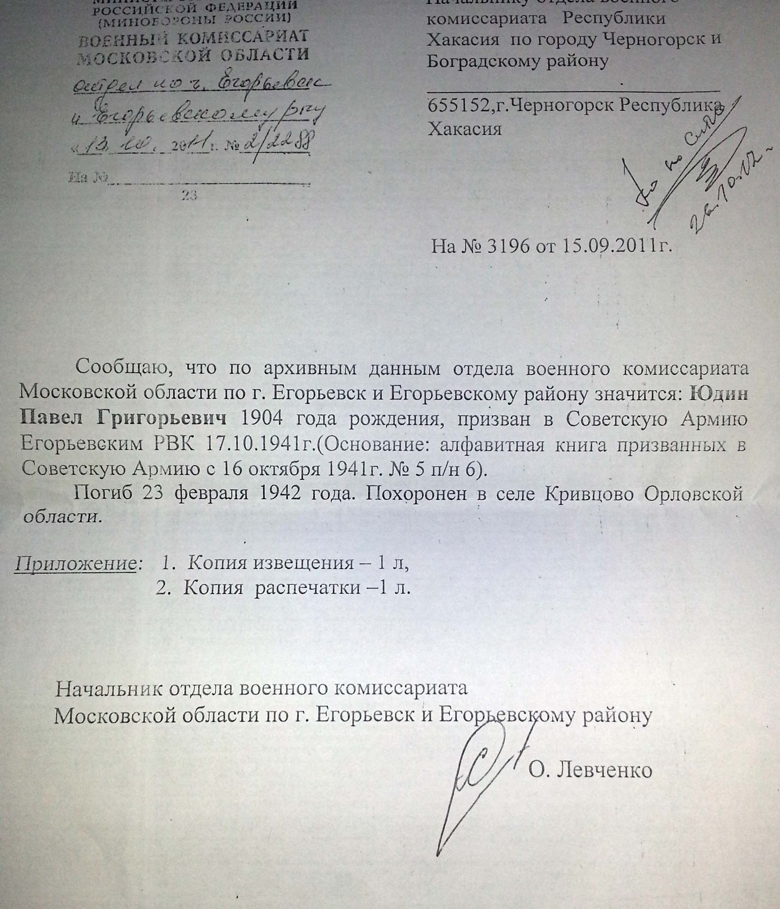

Продолжительность жизни: 38
Место жительства: п. Шувое
Призван в Советскую Армию 17.10.1941
Отец: Юдин Григорий Ефимович (? - 11.05.1940)
Мать: Юдина (Хохлова) Домна Артемовна (? - 1963)
Сестра: (Юдина) Степанида Григорьевна (1900 - ?)
Сестра: Прохорова (Юдина) Аграфена Григорьевна (1915 - ?)
Жена: Юдина (Шибалова) Анна Афанасьевна (1905 - 01.10.1972)
Сын: Юдин Николай Павлович (15.05.1927 - 19.08.1984)
Дочь: Миронова (Юдина) Анна Павловна (07.06.1929 - 28.12.2012)
Дочь: Шипова (Юдина) Капиталина Павловна (30.10.1930)
Дочь: Гришина (Юдина) Александра Павловна (08.03.1932 - 16.10.1984)
Дочь: Киселева (Юдина) Анфиса Павловна (23.04.1935 - 20.12.2002)
Родился: 1904. Отец: Юдин Григорий Ефимович. Мать: Юдина (Хохлова) Домна Артемовна.
Родился сын: Юдин Николай Павлович, 15.05.1927. Мать: Юдина (Шибалова) Анна Афанасьевна.
Родилась дочь: Миронова (Юдина) Анна Павловна, 07.06.1929, п. Шувое. Мать: Юдина (Шибалова) Анна Афанасьевна.
Родилась дочь: Шипова (Юдина) Капиталина Павловна, 30.10.1930, п. Шувое. Мать: Юдина (Шибалова) Анна Афанасьевна.
Женился. Жена: Юдина (Шибалова) Анна Афанасьевна.
Родилась дочь: Гришина (Юдина) Александра Павловна, 08.03.1932. Мать: Юдина (Шибалова) Анна Афанасьевна.
Родилась дочь: Киселева (Юдина) Анфиса Павловна, 23.04.1935. Мать: Юдина (Шибалова) Анна Афанасьевна.
Умер: 23.02.1942, с. Кривцово. Причина смерти: Погиб на войне. Орловско-Курская дуга.
. |